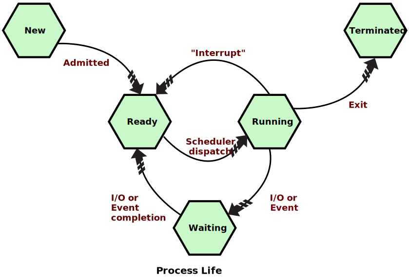
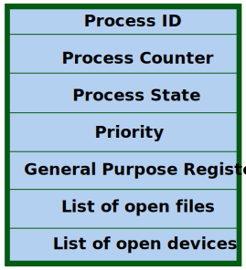
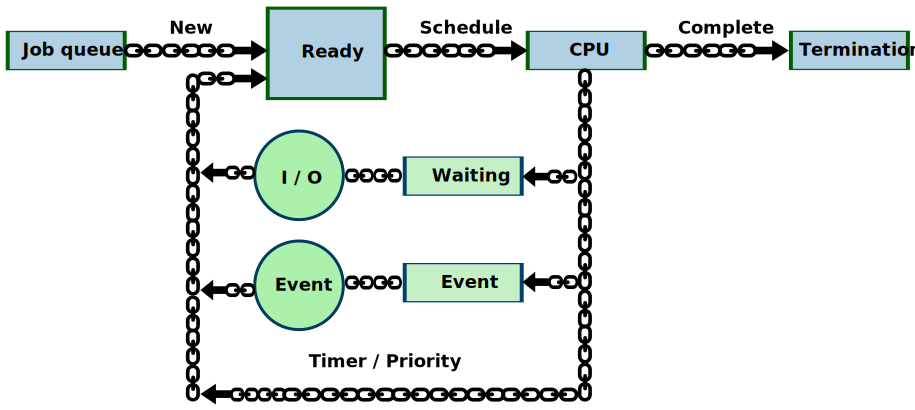
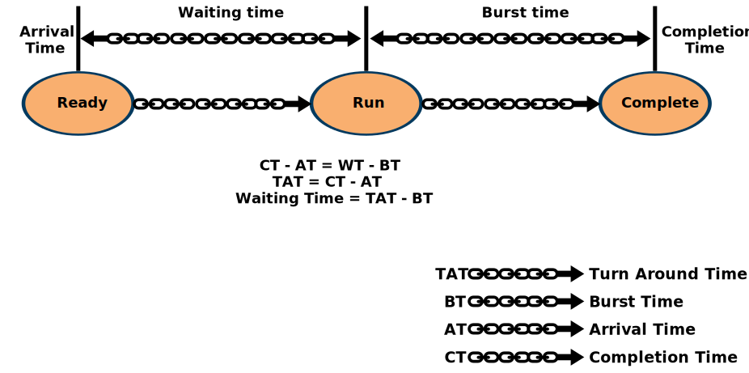
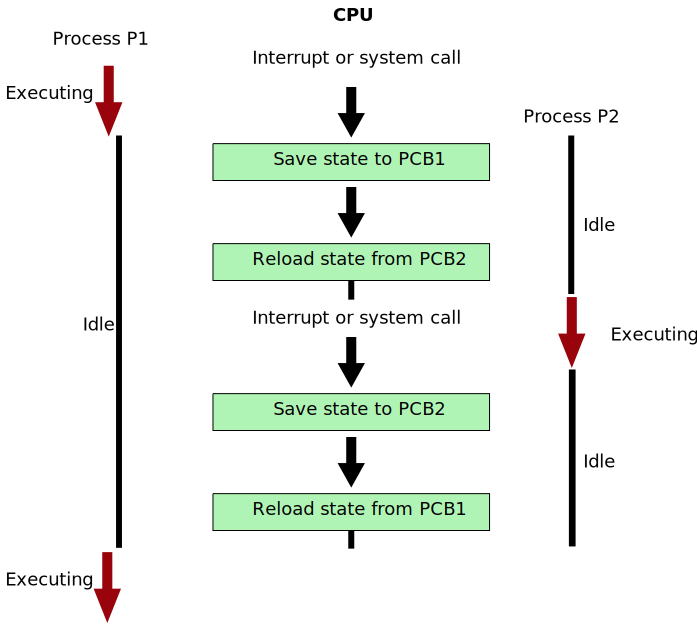

Process Management in OS
- A program does nothing unless its instructions are executed by CPU.
- A program in execution is called a process.
- In order to accomplish its task, process needs the computer resources.
- There may exist more than one process in the system which may require the same resource at the same
time. Therefore, the operating system has to manage all the processes and the resources in a convenient
and efficient way.
- Some resources may need to be executed by one process at one time to maintain the consistency otherwise
the system can become inconsistent, and deadlock may occur.
- A deadlock occurs when two or more processes are unable to proceed because they are waiting for
each other to release resources.
- The operating system is responsible for the following activities in connection with Process Management:
- Scheduling process and threads on the CPU.
- Creating and deleting both user and system processes.
- Suspending and resuming processes.
- Providing mechanisms for process synchronization.
- Providing mechanisms for process communication.
What is process?
- A process is a program in execution including the current values of the program counter,
registers and variables.
- The difference between a process and a program is that the program is the group of instruction where
as the process is the activity. Or we can say process is an active state of program.
- We write our computer programs in a text file and when we execute this program, it becomes a process
which performs all the tasks mentioned in the program.
- When a program is loaded into the memory and it becomes a process, it can be divided into four
sections: stack, heap, text and data.
- A process generally also includes the process stack, which contains temporary data (such as function
parameters, return addresses, and local variables), and a data section, which contains global
variables.
- Stack: The process stack contains the temporary data such as method/function, parameters, return
address and local variables.
- Heap: This is dynamically allocated memory to a process during its runtime.
- Text: Program counters (It stores the list of address of next instructions that has to be executed
after the current process) & content of processor registers.
- Data: This section contains the all global and static variables.
Process States
- When a process executes, it passes through different states.
- These stages may differ in different operating systems.
- In general, a process can have one of the following five states at a time.

- New: This is the initial state when a process is first started/created.
- Ready: The process are waiting to have the processor allocated to them by the operating
system so that they can run.
- Process may come into this state after leaving the start state or while running but be
interrupted by the scheduler to assign CPU to some other process.
- Running: After Ready state, the process state is set to running and the processor
execute its instruction.
- Waiting: Process moves into the waiting state if it needs to wait for a resource, such as
waiting for user input, or waiting for a file to become available.
- Terminated: Once the process finishes its execution or its is terminated by the operating
system, it is moved to the terminated state where it waits to be removed from main memory.
Attributes of a process
- The attributes of the process are used by the operating system to create the process control
block (PCB) for each of them.
- This is also called context of the process. Attributes which are stored in the PCB are described
below.
- Process ID: When a process is created, a unique id is assigned to the process
which is used for unique identification of the process in the system.
- Program counter: A program counter stores the address of the last instruction of
the process on which the process was suspended. The CPU uses this address when the
execution of this process is resumed.
- Process State: The process, from its creation to the completion, goes through
various states which are new, ready, running and waiting.
- Priority: Every process has its own priority. The process with the highest
priority among the process gets the CPU first. This is also stored on the process
control block.
- General Purpose Registers: Every process has its own set of registers which are
used to hold the data which is generated during the execution of the process.
- List of open files: During the execution, every process uses some files which
need to be present in the main memory. OS also maintains a list of open files in the
PCB.
- List of open devices: OS also maintain the list of all open devices which are
used during the execution of the process.

Process Scheduling
- Operating system uses various schedulers for the process scheduling described below.
Long term scheduler
- Long term scheduler is also known as job scheduler. It chooses the process from the pool
(secondary memory) and keeps them in the ready queue maintained in the primary memory.
- This scheduler decides which programs should be executed from the pool of programs waiting in
the job queue.
- The long-term scheduler considers factors such as system utilization, available memory, and the
types of programs that are currently running. It decides which programs should be admitted to
the system, and it loads them into memory for execution.
Short term schedular
- Once a process is admitted to the system, the short-term scheduler (also known as the CPU
scheduler) takes over.
- The short-term scheduler is responsible for selecting which process should be executed next from
the pool of processes that are currently waiting in the ready queue.
- This scheduler is a faster and more frequent process than the long-term scheduler, as it
operates on a millisecond or nanosecond time scale. The short-term scheduler considers factors
such as process priority, remaining burst time, and the amount of CPU time that each process has
consumed so far.
Medium term scheduler
- The medium-term scheduler is a less common type of scheduler that is used in some operating
systems.
- The medium-term scheduler is responsible for temporarily removing processes from the memory when
there is a shortage of memory resources. It does this by swapping out some of the processes from
the memory and storing them on the hard disk. This frees up memory resources for other processes
to use. Later, when the swapped-out processes are needed again, the medium-term scheduler swaps
them back into memory.
Process Queues
- The operating system manages various types of queues for each of the process states.
- The PCB related to the process is also stored in the queue of the same state.
- If the process is moved from one state to another state then its PCB is also unlinked from the
corresponding queue and added to the other state queue in which the transition is made.

- Job Queue
- In starting, all the process get stored in the job queue.
- It is maintained in the secondary memory.
- The long term scheduler (Job scheduler) picks some of the process and put them in the
primary memory.
- Ready Queue
- Ready queue is maintained in primary memory.
- The short term scheduler picks the job from the ready queue and dispatch of the CPU for
the execution.
- Waiting Queue
- When the process needs some IO operation in order to complete its execution, OS Changes
the state of the process from running to waiting.
- The context (PCB) associated with the process gets stored on the waiting queue which
will be used by the processor when the process finishes the IO.
Various Times related to Process:

- Arrival Time
- The time at which the process enters into the ready queue.
- Burst Time
- The total amount of time required by the CPU to execute the whole process is called the
Burst Time.
- This does not include the waiting time.
- It is confusing to calculate the execution time for a process even before executing it
hence the scheduling problems based on the burst time cannot be implemented in reality.
- Completion Time
- The time at which the process enters into the completion state or the time at which the
process completes its execution.
- Turn around time
- The total amount of time spent by the process from its arrival to its completion.
- Waiting Time
- The total amount of time for which the process waits for the CPU to be assigned.
- Response Time
- The difference between the arrival time and the time at which the process first gets the
CPU.
CPU Scheduling
- In the uniprogramming systems like MS DOS, when a process waits for I/O operation to be done,
the CPU remains idol.
- Uniprogramming is a type of operating system in which only one program can be executed at a
time.
- This is an overhead since it wastes the time and causes the problem of starvation.
- "overhead" refers to the extra resources that are required by the system to perform tasks
beyond what is required for the user's program. Overhead can include the time, memory,
processing power, or other system resources that are needed to manage and run the operating
system itself.
- However, in multirogramming systems, the CPU doesn't remain idle during the waiting time of
the process and it starts executing other processes.
- Operating system has to define which process the CPU will be given.
- In multiprogramming systems, the OS schedules the processes on the CPU to have the maximum
utilization of it and this procedure is called CPU scheduling. The Operating system uses
various scheduling algorithm to schedule the processes.
- This is a task of the short term schedular to schedule the CPU for the number of processes present
in ready queue.
- Whenever the running process requests some I/O operation then the short term scheduler saves the
current context of the process (also called PCB) and changes its state from running to waiting.
During the time, process is in waiting state; the short term shceduler picks another process from
the ready queue and assigns the CPU to this process. This procedure is called context
switching.
Context switching diagram ↓

What is saved in the Process Control Block?
- The OS maintains a process control block during the lifetime of the process.
- Process control block is a data structure used in operating system to store all data related
information to the process.
- The process control block is deleted when the process is terminated or killed.
- There is the following information which is saved in the PCB and is changing with the state of
the process.
- Process ID → A unique identifier for the process.
- Process State → The current state of the process (running, waiting, etc.)
- Pointer → Pointers to the PCBs of the parent and child processes, and other
relevant data structures.
- Priority → The priority of the process in relation to other processes in the
system.
- Program Counter → The address of the next instruction to be executed.
- CPU Registers → The values of the CPU registers for the process.
- I/O status information → Information about the process's open files, pending I/O
requests, and other I/O-related data.
- Accounting Information → The amount of CPU time used, clock time since process
creation, and other information used for process accounting.
- etc.
Different crieteria used for CPU scheduling in an operating system:
- CPU utilization:This refers to the percentage of time that the CPU is being used. A scheduling
algorithm that aims to maximize CPU utilization will try to keep the CPU busy as much as
possible.
- Throughput: This refers to the number of processes that are completed per unit time. A
scheduling algorithm that aims to maximize throughput will try to maximize the number of
processes that are completed in a given amount of time.
- Turnaround Time: This is the amount of time it takes for a process to complete, from the moment
it enters the ready queue until it finishes executing. A scheduling algorithm that aims to
minimize turnaround time will try to minimize the time that processes spend waiting in the ready
queue.
- Waiting Time: This is the amount of time that a process spends waiting in the ready queue. A
scheduling algorithm that aims to minimize waiting time will try to minimize the amount of time
that processes spend waiting in the ready queue.
- Response Time: This is the amount of time it takes for a process to start responding after a
request has been made. A scheduling algorithm that aims to minimize response time will try to
minimize the time that processes spend waiting in the ready queue before they start executing.
- There are various algorithms which are used by the OS to schedule the processes on the processor in
an efficient way.
The purpose of a Scheduling algorithm
- Maximum CPU utilization
- Fare allocation of CPU
- Maximum throughput
- Minimum turnaround time
- Minimum waiting time
- Minimum response time
There are the following algorithms which can be used to schedule the process.
- First Come First Serve
- Shortest Job First
- Round Robin
First Come First Server CPU Process Scheduling in OS
- This is the basic algorithm which every student must learn to understand all the basics of CPU
Process Scheduling Algorithms.
- First Come First Serve paves the way for understanding of other algorithms.
- This algorithm may have many disadvantages, but these disadvantages created very new and
efficient algorithms. So, we should learn First Come First Serve first.
- Important Abbreviations:
- CPU → Central Processing Unit
- FCFS → First Come First Serve
- AT → Arrival Time
- BT → Burst Time
- WT → Waiting Time
- TAT → Turn Around Time
- CT → Completion Time
- FIFO → First In First Out
First Come First Serve
- FCFS is the first algorithm of CPU process scheduling algorithm.
- FCFS allow the process to execute in linear manner.
- This means that whichever process enters the ready queue first is executed first.
- This shows that FCFS algorithm follows FIFO principle.
- The FCFS algorithm can be executed in Pre Emptive and Non Pre Emptive manner.
Preemptive Approach
- Here the OS allots the resources to a process for a predetermined period of time.
- The process transitions from running state to ready state or from waiting state to ready
state during resource allocation.
- This switching happens because the CPU may assign other processes precedence and substitute
the currently active process for the higher priority process.
Non Preemptive Approach
- Here the resource cannot be withdrawn from a process before the process has finished
running.
- When a running process finishes and transitions to the waiting state, resources are
switched.
Convoy Effect in FCFS
- Convoy effect is a phenomenon which occurs in the scheduling algorithm named FCFS.
- The convoy effect occurs when the FCFS Scheduling algorithm occurs in a way of non preemptive
way.
- The non preemptive way means that if a process or job is started execution, then the
operating system must complete is process or job.
- Until, the process is zero the next process does not start its execution.
- The definition of Non Preemptive scheduling in terms of OS means that the CPU will be
completely dedicated till the end of the process started first and the new process is
executed only after finishing of the older process.
- There may be a few cases, which might cause the CPU to allot a too much time. This is
because in the FCFS sheduling algorithm non preemptive approach, the process are chose in
serial oder. Due, to this shorter process behind the larger process takes too much time to
complete its execution. Due, to this the WT, TAT, CT is very high.
- If the first process if large or completion time is too high, then convoy effect in the FCFS
algorithm is occured.
- Let us assume that longer job takes infinite time to complete. Then, the remaining processes
have to wait for the same infinite time. Due to this convoy effect created by the longer job
the starvation of the waiting processes increases very rapidly. this is the biggest
disadvantage of FCFS CPU process scheduling.
Characteristics of FCFS CPU Process Scheduling
- Implementation is simple.
- Does not cause any casualties while using.
- It adopts a non pre-emptive and pre-emptive strategy.
- It runs each procedure in the order that they are recieved.
- Arrival time is used as a selection criterin for procedures.
Advantages of FCFS CPU Process Scheduling
- In order to allocate processes, it uses the FIFO queue.
- The FCFS CPU Scheduling Process is straight forward and easy to implement.
- In the FCFS situation pre emptive scheduling, there is not chance of process starving.
- As there is no consideration of process priority, it is an equitable algorithm.
Disadvantages of FCFS CPU Process Scheduling
- FCFS CPU Scheduling Algorithm has Long Waiting Time.
- FCFS CPU Scheduling favors CPU over Input or Output operations.
- In FCFS there is a chance of occurrence of Convoy Effect.
- Because FCFS is so straight forward, it often isn't very effective. Extended waiting periods
go hand in hand with this. All other orders are left idle if the CPU is busy processing one
time-consuming order.
Problems on the FCFS CPU Scheduling Algorithm
This is how the FCFS is solved in Non Pre Emptive Approach.
Shortest Job First (SJF) Scheduling
- SJF Scheduling algorithm, schedules the processes according to their burst time.
- In SJF scheduling, the process with the lowest burst time, among the list of available processes in
the ready queue, is going to be scheduled next.
- However, it is very difficult to predict the burst time needed for a process hence this algorithm is
very difficult to implement in the system.
Advantages of SJF
- Maximum throughput
- Minimum average waiting and turnaround time
Disadvantages of SJF
- May suffer with the problem of starvation.
- It is not implementable because the exact burst time for a process can't be known in advance.
Non-Preemptive shortest job first CPU Scheduling Algorithm example:
- Advantages:
- SJF is better than the FCFS algorithm as it reduces the average waiting time.
- SJF is genrally used for long term scheduling.
- It is suitable for the jobs running in batches, where run times are already known.
- SJF is probably optimal in terms of average turnaround time.
- Disadvantages:
- SJF may cause very long turn-around times or starvation.
- In SJF job completion timme must be known earlier, but sometimes it is hard to predict.
- Sometimes, it is complicated to predict the length of the upcoming CPU request.
- It leads to the starvation that does not reduce average turnaround time.
Preemptive SJF - Shortest Remaining Time First Scheduling Algorithm
- In SRTF schefuling algorithm, the process with the smallest amount of time remaining until
completion is selected to execute.
- Since the currently executing process is the one with the shortest amount of time remaining by
definition, and since that time should only reduce as execution progresses, process will always
run until they complete or a new process is added that requires a smaller amount of time.
Examples to show working of Preemptive Shortest Job First CPU Scheduling Algorithm ↓
Round Robin Scheduling Algorithm
- In RR algorithm each process is assigned a fixed time slot in a cyclic way.
- It is basically the preemptive version of FCFS scheduling algorithm.
- RR CPU algorithm generally focuses on Time sharing technique.
- The period of time for which a process or job is allowed to run in a pre-emptive method is called
time quantum.
- Each process present in the ready queue is assigned the CPU for that time quantum, if the execution
of the process is completed during that time then the process will end else the process will go back
to the waiting table and wait for its next turn to complete the execution.
Characteristics of RR:
- It is simle, easy to implement, and starvation-free as all process get fair share of CPU time.
- One of the most commonly used technique in CPU scheduling as a core.
- It is preempitve as process are assigned CPU only for a fixed slice of time at most.
- The disadvantages of it is more overhead of context switching.
Advantages of RR:
- There is fairness since every process gets equal share of CPU.
- The newly created process is added to end of ready queue.
- A round-robin scheduler generally employs time-sharing, giving each job a time slot
or quantum.
- While performing a round-robin scheduling, a particular time quantum is allotted to
different jobs.
- Each process get a chance to reschedule after a particular quantum time in this
scheduling
Disadvantages of RR:
- There is Larger waiting time and Response time.
- There is Low throughput
- There is Context Switches
- Gantt chart seems to come too big (if quantum time is less for scheduling.
- Time consuming scheduling for small quantum
Consider the following table of arrival time and burst time for four processes P1, P2,
P3, and P4 and given Time Quantum = 2. ↓
Multiple-Processor Scheduling
- In multiple-processor scheduling multiple CPU's are available and hence load sharing becomes
possible.
- However multiple processor scheduling is more complex as compared to single processor scheduling.
- In multiple processor scheduling there are cases when the processors are identical i.e. HOMOGENEOUS,
in terms of their functionality, we can use any processor available to run any process in the queue.
Approaches to Multiple-Processor Scheduling:
- One approach is when all the scheduling decisions and I/O processing are handled by a single
processor which is called the master server and the other processors executes only the
user code. This is simple and reduces the need of data sharing. This entire scenario is
called asymmetric multiprocessing.
- A second approach uses symmetric multiprocessing where each processor is self scheduling.
All processes may be in common ready queue or each processor may have its own private queue for
ready processes. The scheduling proceeds further by having the scheduler for each processor
examine the ready queue and select a process to execute.
Processor Affinity
- Processor affinity is the ability to bind a process or thread to a specific CPU or core in a
multi-core system. This means that the process or thread will be scheduled to run exclusively on the
chosen CPU or core, and will not be allowed to run on any other CPU or core in the system.
- The purpose of processor affinity is to improve the performance of a system by reducing the overhead
of context switching between different CPUs or cores. By binding a process or thread to a specific
CPU or core, the operating system can reduce the time and resources needed to switch between
different CPUs or cores, which can result in faster execution times and more efficient use of system
resources.
- When a process runs on a specific processor there are certain effects on the cache memory. The
data most recently accessed by the process populate the cache for the processor and as a result
successive memory access by the process are often satisfied in the cache memory. Now if the
process migrates to another processor, the contents of the cache memory must be invalidated for
the first processor and the cache for the second processor must be repopulated. Because of the
high cost of invalidating and repopulating caches, most of the SMP(symmetric multiprocessing)
systems try to avoid migration of processes from one processor to another and try to keep a
process running on the same processor. This is known as PROCESSOR AFFINITY.
There are two types of processor affinity:
- Soft Affinity: When an operating system has a policy of attempting to keep a process
running on the same processor but not guaranteeing it will do so, this situation is called soft
affinity.
- Hard Affinity: Hard affinity allows a process to specify a subset of processors on which
it may run. Some systems such as Linux implements soft affinity but also provide some system
calls like sched_setaffinity() that supports hard affinity.
Load Balancing
- Load balancing is a phenomena which keeps the workload evenly distributed accross all processors in
a SMP system. Load balancing is necessary only on systems where each processors has its own private
queue of process which are eligible to execute.
- Load balancing is unncessary because once a processor becomes idle it immediately extracts a
runnable process from the common run queue.
- On SMP, it is important to keep the workload balanced among all processors to fully utilize the
benefits of having more than one processor else one or more processor will sit idle while other
processors have high workloads along with lists of processors awaiting the CPU.
There are two general approaches to load balancing:
- Push Migration: In push migration a task routinely checks the load on each
processor and if it finds an imbalance then it evenly distributes load on each
processors by moving the processes from overloaded to idle or less busy processors.
- Pull Migration: Pull Migration occurs when an idle processor pulls a waiting task
from a busy processor for its execution.
Multicore Processors
- In multicore processors multiple processor core are placed on some physical chip.
- Each core has a register set to maintain its architectural state and thus appears to the operating
system as a separate physical processor.
- SMP systems that use multicore processors are faster and consume less power than systems in
which each processor has its own physical chip.
- However multicore processors may complicate the scheduling problems.
- When processor accesses memory then it spends a significant amount of time waiting for the data to
become available, this situation is called memory stall. It occurs for various reasons such
as cache miss, which is accessing the data that is not in the cache memory. In such cases the
processor can spen upto fifty percent of its time waiting for data to become available from the
memory. To solve this problem recent hardware designs have implemented multithreaded processor cores
in which two or more hardware threads are assigned to each core. Therefor if one thread stalls while
waiting for the memory, core can switch to another thread.
Process and Thread
- Process:
- Processes are basically the programs that are dispatched from the ready state and are
scheduled in the CPU for execution. PCB(Process Control Block) holds the concept of process.
A process can create other processes which are known as Child Processes. The process takes
more time to terminate and it is isolated means it does not share the memory with any other
process.
- The process can have the following states: new, ready, running, waiting, terminated, and
suspended
- Thread:
- Thread is the segment of a process which means a process can have multiple threads
and these multiple threads are contained within a process.
- A thread has three states: Ready, Running and Blocked.
- The thread takes less time to terminate as compared to the process but unlike the process,
threads
do not isolate.
Difference between Process and Thread:
Multithreading in OS
- Multithreading is a technique used in operating systems to enable multiple threads of execution
within a single process. A thread is a lightweight process that shares the same memory space and
resources as other threads in the same process. Multithreading allows for concurrent execution of
multiple tasks within a single process, making it possible to achieve better performance and
responsiveness in certain types of applications
- Lets say, for example a program is not capable of reading keystrokes while making drawings. These
tasks cannot be executed by the program at the same time. This problem can be solved through
multi-tasking so that two or more tasks can be executed simultaneously.
- One of the benefits of multithreading is that it can improve overall system responsiveness by
allowing applications to continue running even when some threads are blocked or waiting for I/O
operations to complete. Multithreading can also help to reduce the overhead associated with context
switching between processes, since switching between threads within a process is typically faster.
- The concept of multi-threading needs proper understanding of these two terms – a process and
a thread.
- A process is a program being executed. A process can be further divided into
independent units known as threads.
- A thread is like a small light-weight process within a process.
Or we can say a collection of threads is what is known as a
process.
- Multi-tasking is of two types:
- Processor based: It is totally managed by the OS.
- Thread based: It can be controlled by the programmer to some extent.
Applicaitons
Threading is a technique used in computer programming to improve the performance and responsiveness
of software applications. It involves dividing a program into multiple smaller threads or tasks that
can be executed independently and concurrently
- Threading is used widely in almost every field.
- Most widely it is seen over the internet nowadays where we are using transaction processing of
every type like reacharges, online transfer, banking etc.
- GUI Applications: Threading is commonly used in Graphical User Interface (GUI) applications to
keep the interface responsive while performing computationally intensive tasks. For example,
when you click a button in a GUI application, a separate thread can be created to perform the
task while the main thread keeps the interface responsive.
- Network Applications: Threading can be used in network applications to improve performance and
scalability. For example, a server application can use multiple threads to handle incoming
client connections simultaneously.
- Multimedia Applications: Threading is commonly used in multimedia applications to play audio and
video files while simultaneously performing other tasks. For example, a media player can use a
separate thread to play the media file while the main thread handles user input and interface
updates.
- Parallel Processing: Threading can be used in parallel processing applications to speed up
computations by dividing a large task into smaller independent tasks that can be executed
simultaneously on different threads.
- Games: Threading can be used in games to keep the game running smoothly while performing tasks
such as physics calculations, artificial intelligence, and rendering
Previous Year Questions
Q- What do you mean by PCB? Where is it used? What are its contents? Explain.
Q- Distinguish between the following:
- Process and Program
- Multiprogramming and multiprocessing
- Job scheduling and CPU scheduling
Q- Consider four process P1, P2, P3 and P4 with arrival time (0, 2, 4, 5) and burst time (7, 4, 1, 4)
respectively, what is the average waiting time and turnaround time in SJF and Round Robin scheduling
algorithm (with time quantum of 2ns) respectively?
Q- Draw the process state diagram and explain functionality of each state in detail.
Q- Explain the following:
- Multithreading
- Context switching
- Schedulers
Assignment question answer
1. Some CPUs provide for more than two modes of operation. What are two possible uses of these
multiple modes?
Ans. Multiple modes of operation in CPUs can be used for various purposes, including:
- Privilege separation: Some CPUs provide multiple modes of operation to separate the privilege
levels of software running on the system. This enables the system to provide different levels of
access to resources and hardware devices based on the privilege level of the software. For
example, operating systems can use different modes of operation to protect system resources and
prevent unauthorized access to them.
- Virtualization: Multiple modes of operation can also be used to enable virtualization, where
multiple virtual machines (VMs) can run on a single physical machine. In this scenario, each VM
can run in its own mode of operation, isolating it from other VMs and the host system. This
provides increased security and flexibility, as each VM can run its own operating system and
software stack, independently of other VMs on the same machine.
2.What are the three major activities of an operating system with regard to memory management?
Ans. The three major activities of an operating system with regard to memory management are:
-
Allocation: The operating system is responsible for allocating memory to different processes and
applications running on the system. When a process or application requests memory, the operating
system determines whether there is enough free memory available and, if so, allocates a portion
of memory to the process.
- Deallocation: The operating system is also responsible for deallocating memory that is no longer
needed by a process. When a process terminates or no longer requires a portion of memory that it
had previously allocated, the operating system deallocates that memory and makes it available
for other processes to use.
- Protection: The operating system must ensure that each process can access only the memory that
it has been allocated and prevent processes from accessing memory that belongs to other
processes. The operating system uses techniques such as address translation and memory
protection mechanisms to enforce memory protection and prevent processes from accessing
unauthorized memory locations.
3. Provide two programming examples in which multi-threading does not provide better performance
than a single-threaded solution
Ans. There are situations in which multithreading does not provide better performance than a
single-threaded solution. Two programming examples are:
- Small tasks: If the tasks that need to be performed are very small, the overhead of creating and
managing multiple threads can actually outweigh the benefits of parallelization. For example,
consider a program that needs to sort an array of 10 elements. In this case, creating multiple
threads to sort the array would likely result in slower performance than simply sorting the
array in a single thread.
- Shared resources: If the threads in a multithreaded program need to access shared resources such
as memory or files, managing access to these resources can become a bottleneck and limit the
benefits of parallelization. For example, consider a program that reads data from a file,
processes it, and writes the results to another file. If multiple threads are used to perform
the processing, they may contend for access to the input and output files, leading to reduced
performance compared to a single-threaded solution that processes the data sequentially.
In both of these examples, the overhead of creating and mananging can outweigh the benefits of
parallelizaiton, leading to slower performance than a single-threaded solution.